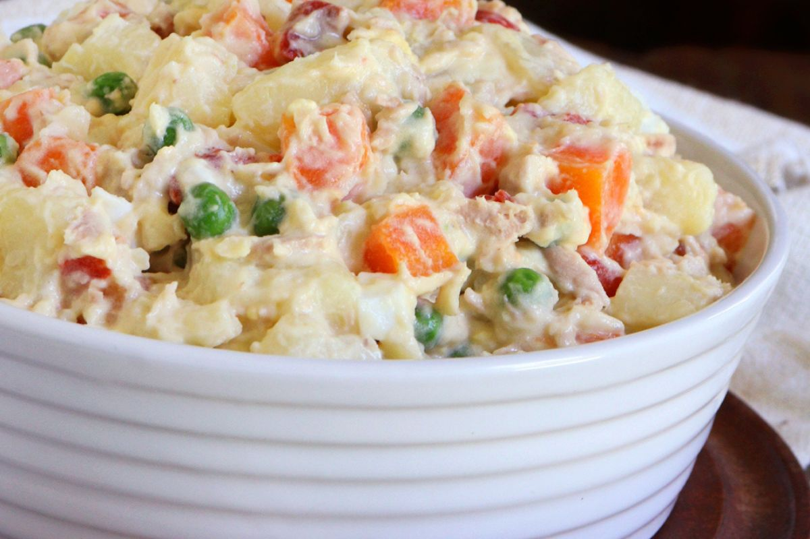

ENSALADA RUSA

Descripción:
Esta receta de ensalada rusa es la que hacen mi mamá y mi abuela cada vez que hay una reunión familiar o una ocasión especial. Omite el jamón para hacer de este un plato vegetariano. Las papas, las zanahorias y los huevos no tienen que enfriarse completamente después de hervirlos.
Ingredientes:
- 6 papas peladas
- 1 zanahoria o 2 (a tu gusto)
- 4 huevos enteros
- 6 pepinillos grandes cortados en cubos
- 1 lata de guisantes (15 onzas) escurridos.
- ½ taza de jamón cocido en cubos, o al gusto
- ½ taza de mayonesa
Pasos de preparación:
- Traiga una olla grande con agua a hervir. Agregue las papas, hierva y cocine de 5 a 10 minutos. Agregue las zanahorias y los huevos enteros y continúe hirviendo hasta que las papas estén tiernas, de 10 a 15 minutos. Escurra y enfríe ligeramente la mezcla.
- Picar las patatas y la zanahoria. Pelar y picar los huevos.
- Mezcle las papas, la zanahoria, los huevos, los pepinillos, los guisantes, el jamón y el eneldo en un tazón grande; agregue la mayonesa hasta que la ensalada esté cubierta uniformemente.
Para más información puedes revisar esta receta en su pagina oficial.